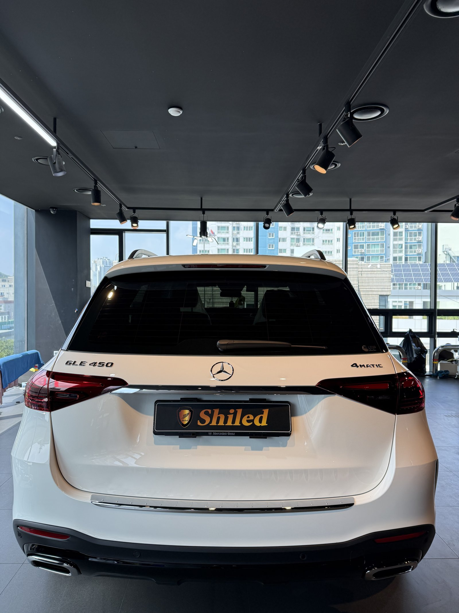
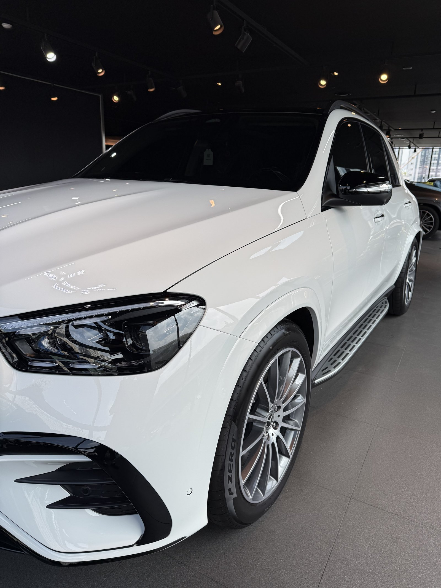
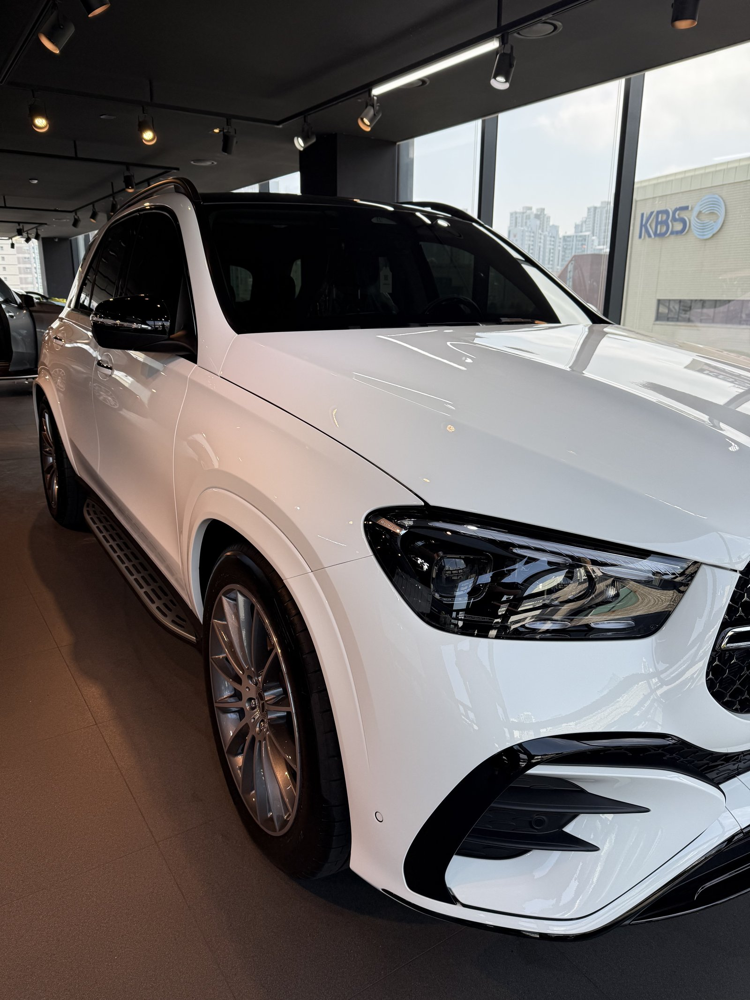
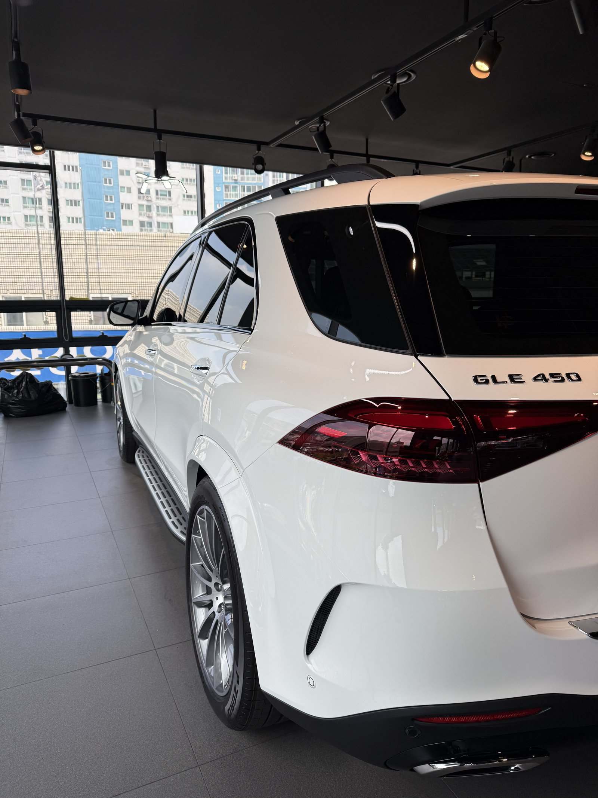
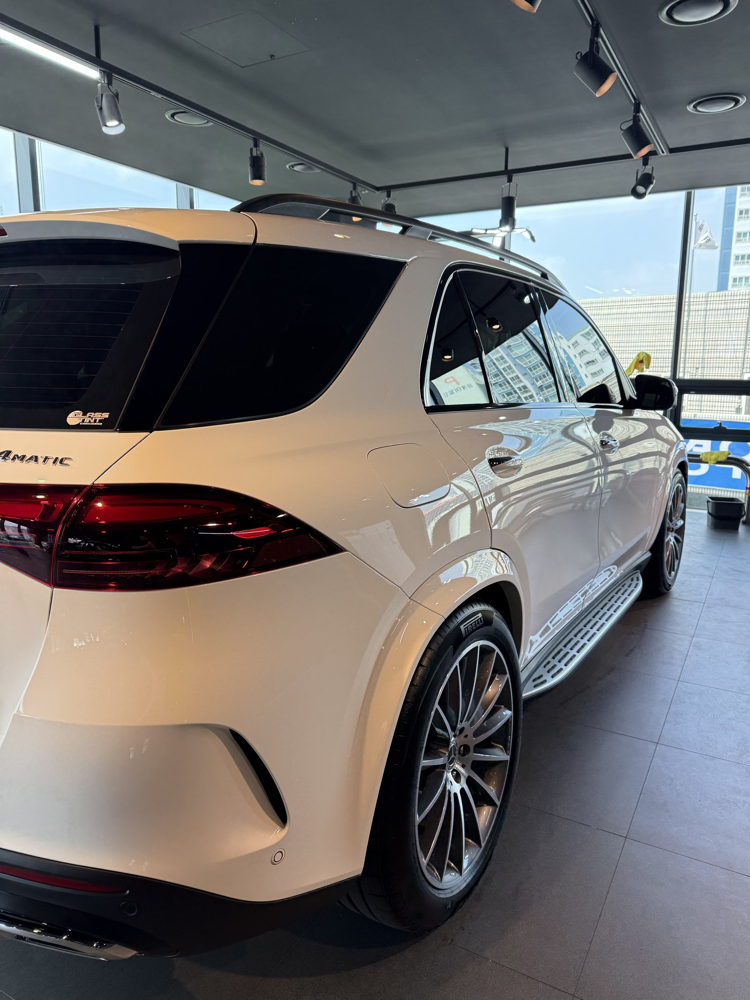
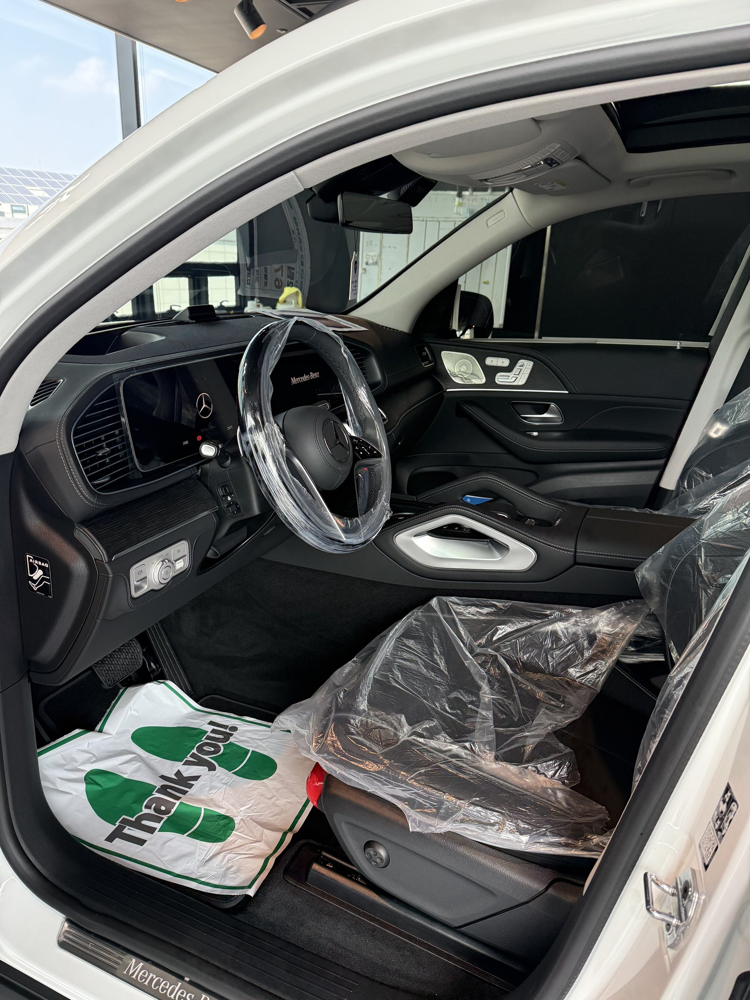
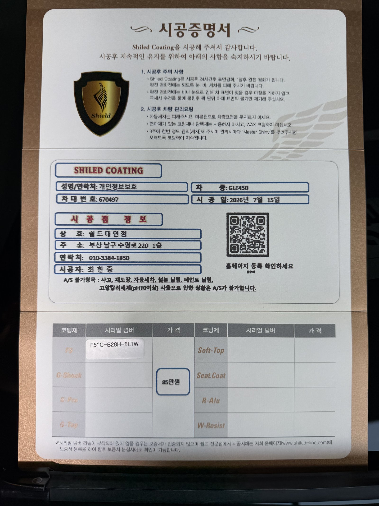

같은 날 두 번째로 입고된 벤츠 GLE450 백색입니다.
앞서 시공한 차와 같은 차종, 같은 색이지만 차대번호가 다른 별개의 신차입니다. 이 차도 F5로 진행했습니다.

신차패키지, 왜 딜러 출고 전에 잡나
딜러 전시장에서 넘어온 차는 고객 인도 전 마지막 관문입니다.
이 시점을 놓치면 이후로는 운행과 세차로 미세한 잔기스가 쌓이기 시작합니다. 그래서 쉴드광택은 딜러사와 협업해 출고 전 신차패키지 코팅을 진행합니다. 오늘도 그렇게 넘어온 차입니다.

백색에 F5를 올리면 달라지는 것
F5는 색감 깊이를 끌어올려 글로시함을 극대화하는 코팅입니다.
백색은 관리를 소홀히 하면 가장 먼저 광이 죽어 보이는 색입니다. 반대로 F5처럼 발색을 잡아주는 코팅을 올리면, 표면에 맺히는 하이라이트가 또렷해지면서 같은 백색도 훨씬 입체적으로 보입니다. 코팅제는 대표가 화학공학 전공으로 직접 개발·제조한 제품입니다.

기술자의 팁
시공 대수가 많은 날일수록 순서를 지킵니다. 디테일링 세차 → 탈지 → 코팅, 한 대씩 같은 공정을 반복합니다. 물량이 많다고 단계를 줄이면 코팅 밀착력이 떨어집니다.


인도 전 보호 상태 그대로
실내는 아직 딜러사 보호 커버가 씌워진 상태입니다.
트렁크와 시트 모두 인도 전 보호 비닐이 그대로 남아있는 걸 확인하실 수 있습니다. 외부 도장은 F5로 발색을 마쳤고, 실내는 인도 시점까지 그대로 관리됩니다.

시공증명서를 함께 드립니다
모든 시공 차량에 시공증명서를 드립니다.
차종·시공일·코팅제 시리얼 번호가 적혀 있고, 홈페이지에 등록해 보증을 받으실 수 있습니다. 이 차는 F5 코팅으로 기록돼 있습니다.

차종·시공일·코팅제 시리얼이 기재된 시공증명서
자주 묻는 질문
Q. 신차패키지 코팅은 일반 코팅과 뭐가 다른가요?
A. 코팅제 자체는 같습니다. 차이는 시점입니다. 딜러 출고 전, 고객 손에 들어가기 전 단계에서 시공하기 때문에 도장면이 가장 깨끗한 상태에서 코팅막을 올릴 수 있습니다.
Q. 백색 신차에 F5를 쓰는 이유는 무엇인가요?
A. F5는 색감 깊이를 끌어올려 글로시함을 극대화합니다. 백색은 그냥 두면 발색이 평면적으로 보이기 쉬운데, F5를 올리면 표면 반사가 또렷해지면서 입체감 있는 화이트로 바뀝니다.
Q. 같은 날 여러 대를 시공해도 품질 차이가 없나요?
A. 없습니다. 한 대씩 전처리부터 코팅까지 같은 공정을 그대로 반복합니다. 시공 대수가 많다고 단계를 줄이지 않습니다.
Q. 쉴드광택 위치와 예약은 어떻게 하나요?
A. 부산 남구 유엔로220 1F 쉴드광택입니다. 예약·상담은 010-3384-1850, 대표 최한중이 직접 상담하고 책임 시공합니다.
딜러 출고 전 신차패키지, 물량이 많아도 공정은 그대로입니다.
제품을 직접 만드는 사람이 직접 시공합니다.
부산에서 신차코팅을 고민 중이시면 편하게 연락 주십시오.
어떤 차를 타냐보다 어떻게 타냐가 중요합니다~!
📞 010-3384-1850 견적 문의쉴드광택 · 부산 남구 유엔로220 1F · 대표 최한중